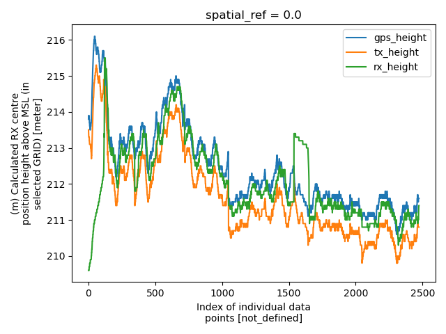

Note
Go to the end to download the full example code.
DAT & XYZ (Loupe TEM)
This example demonstrates conversion of data from Loupe Geophysics’ time domain electromagnetic (TEM) backpack system.
The raw data is in .dat format as exported by the Loupe. The inverted resistivity models come as a set of syn/dat/inv .XYZ files exported by Aarhus Workbench.
Source Reference: Minsley et al., in preparation, LoupeEM data and resistivity models from the Kankakee River groundwater-surface water interaction site, U.S. Geological Survey data release.
import matplotlib.pyplot as plt
from os.path import join
import numpy as np
import gspy
import warnings
warnings.filterwarnings('ignore')
Initialize the Survey
# Path to example files
data_path = '../data_files/loupe'
# Survey metadata file
metadata = join(data_path, "data//LoupeEM_survey_md.yml")
Establish the Survey
survey = gspy.Survey.from_dict(metadata)
1dataset_attrs:
2 title: LoupeEM ground-based electromagnetic survey, Kankakee, Indiana surface water-groundwater interaction site and NGWOS training
3 institution: USGS Geology, Geophysics, and Geochemistry Science Center
4 source: USGS raw and processed data, and inverted resistivity models
5 history: (1) Data acquisition 20230808 - 20230809 by USGS Illinois River Basin NGWOS training class (2) Raw data exported from LoupeEM instrument and converted to ascii using dsQC (ver. 1.1.25.57710) 08/2023; Raw data exported to netCDF 'raw_data' group 11/2024; (3) Raw data and system information were imported into the Aarhus Workbench software (v 6.9.0.0) where data were manually processed by USGS 11/2024. Processed LoupeEM data exported to netCDF 'processed_data' group 11/2024; (4) Processed data were inverted in Aarhus Workbench software using laterally constrained inversion to recover 20-layer fixed depth blocky resistivity models by USGS 11/2024; Inverted resistivity models exported to netCDF 'inverted_models' group 11/2024.
6 references: Minsley, Burke J., et al., in preparation, Ground-based electromagnetic survey data, Kankakee surface water-groundwater interaction site, 2023, U.S. Geological Survey data release, https://doi.org/10.5066/xxxxxxx.
7 comment: This dataset includes minimally processed (raw) and fully processed LoupeEM data used as input to inversion, and laterally constrained inverted resistivity models.
8 summary: Ground-based electromagnetic data were collected in August 2023 at the Kankakee surface water-groundwater interaction site, and adjacent Turkey Foot park, in northwest Indiana. These data were collected in support of the USGS Illinois River Basin (ILRB) Next Generation Water Observing System (NGWOS) project, and were included as part of a larger training course on geophysical methods at the site. Data were acquired with the two-person backpack LoupeEM instrument. Electromagnetic data were inverted to produce models of electrical resistivity along survey lines, with typical depth of investigation up to about 100 m and 2 - 3 m near-surface resolution.
9 content: Kankakee LoupeEM survey information
10
11survey_information:
12 survey_type: electromagnetic
13 survey_area_name: Kankakee surface water-groundwater site
14 state: IN
15 country: USA
16 acquisition_start: 20230808
17 acquisition_end: 2020809
18 survey_attributes_units: SI
19
20spatial_ref:
21 wkid: 32616
22 authority: EPSG
23 vertical_crs: WGS84
24
25survey_equipment:
26 electromagnetic_system: LoupeEM
27 serial_number: 10015
28 receiver_software_version: 1.0.60.57722
29 receiver_calibration: Loupe12-20221102T000000.000000000Z
30 electromagnetic_installation: Backpack portable system with 10 m transmitter-receiver separation
31 vlf_stations: [NAA, NLK, NML4]
32 vlf_frequency: [24000, 24800, 25200]
33 vlf_coordinates: [[44.646394N 67.281069W 8000.0km],[48.203611N 121.917056W 3000.0km], [46.366014N 98.335544W 5000.0km]]
Create a ‘data’ branch and attach data leaves
data_container = survey.gs.add_container('data', **dict(content='data container'))
Attach raw data with the Loupe EM system
data = join(data_path, 'data//Kankakee.dat')
metadata = join(data_path, 'data//Loupe_data_metadata.yml')
raw_data = data_container.gs.add(key='raw_data', data_filename=data,
metadata_file=metadata, file_type='loupe')
1dataset_attrs:
2 content: raw loupe EM data
3 comment: n/a
4 type: data,
5 mode: ground
6 method: electromagnetic, time domain
7 instrument: LoupeEM
8
9coordinates:
10 x: EAST
11 y: NORTH
12 z: HEIGHT
13
14loupe_system:
15 type: system
16 mode: ground
17 method: electromagnetic, time domain
18 instrument: LoupeEM
19 data_normalized: True
20 reference_frame: right-handed positive down
21 sample_rate: 0.1
22 digitization_frequency: 504000.0
23 stacks: 360
24 powerline_frequency: 60.0
25
26 dimensions:
27 gate_times:
28 standard_name: gate_times
29 long_name: receiver gate times
30 units: seconds
31 null_value: not_defined
32 bounds: [[1.098e-05, 1.495e-05], [1.297e-05, 1.694e-05], [1.495e-05, 1.892e-05], [1.694e-05, 2.09e-05], [1.892e-05, 2.289e-05], [2.09e-05, 2.884e-05], [2.686e-05, 3.479e-05], [3.281e-05, 4.471e-05], [4.075e-05, 5.662e-05], [5.265e-05, 7.249e-05], [6.654e-05, 9.035e-05], [8.638e-05, 0.00011813], [0.00011217, 0.00015583], [0.0001459, 0.00020146], [0.00019154, 0.00026694], [0.00025305, 0.00035225], [0.00033241, 0.00046733], [0.00043956, 0.0006221], [0.00058241, 0.00082249], [0.00077289, 0.00109233], [0.00102487, 0.00144948], [0.00136019, 0.00192567], [0.0018086, 0.00255662]]
33 centers: [1.2965e-05, 1.4955e-05, 1.6935e-05, 1.892e-05, 2.0905e-05, 2.487e-05, 3.0825e-05, 3.876e-05, 4.8685e-05, 6.257e-05, 7.8445e-05, 0.00010226, 0.000134, 0.00017368, 0.00022924, 0.00030265, 0.00039987, 0.00053083, 0.00070245, 0.00093261, 0.0012372, 0.0016429, 0.0021826]
34
35 n_loop_vertices:
36 standard_name: number_of_loop_vertices
37 long_name: number of loop vertices
38 units: not_defined
39 null_value: not_defined
40 length: 8
41
42 xyz:
43 standard_name: xyz_coordinates
44 long_name: coordinates of the loop vertices
45 units: not_defined
46 null_value: not_defined
47 length: 3
48
49 variables:
50 transmitter:
51 label: z
52 number_of_turns: 13
53 coordinates:
54 values: [[[0.33, 0.14, 0.0], [0.14, 0.33, 0.0], [-0.14, 0.33, 0.0], [-0.33, 0.14, 0.0], [-0.33, -0.14, 0.0], [-0.14, -0.33, 0.0], [0.14, -0.33, 0.0], [0.33, -0.14, 0.0]]]
55 dimensions: ['n_transmitter', 'n_loop_vertices', 'xyz']
56 area: 0.358
57 waveform_type: trapezoid
58 waveform_time:
59 values: [-0.00277778, -0.00276878, 0.0, 9e-06]
60 long_name: waveform time
61 null_value: not_defined
62 units: s
63 waveform_current:
64 values: [0.0, 1.0, 1.0, 0.0]
65 dimensions: ['waveform_time']
66 current_scale_factor: 1.0
67 peak_current: 20.0
68 moment: 94.42
69 base_frequency: 90.0
70 on_time: 0.00276878
71 off_time: 0.00278678
72 orientation: z
73 height: 1.0
74
75 receiver:
76 label: ['x', 'y', 'z']
77 orientation: ['x', 'y', 'z']
78 coil_low_pass_filter: [100000.0, 100000.0, 100000.0]
79 instrument_low_pass_filter: [250000.0, 250000.0, 250000.0]
80 area: [200.0, 200.0, 200.0]
81 delay_time: [4.58e-06, 4.58e-06, 4.58e-06]
82 height: [1.75, 1.75, 1.75]
83 gain: [10, 10, 10]
84
85 couplet:
86 transmitters: ['z', 'z', 'z']
87 receivers: ['x', 'y', 'z']
88 sample_rate: [1.0, 1.0, 1.0]
89 txrx_dx: [-10.0, -10.0, -10.0]
90 txrx_dy: [0.0, 0.0, 0.0]
91 txrx_dz: [-0.75, -0.75, -0.75]
92 data_type: ['dBdt', 'dBdt', 'dBdt']
93 gate_times: ['gate_times', 'gate_times', 'gate_times']
94
95 sample_rate:
96 units: s
97 transmitter_area:
98 units: m^2
99
100variables:
101 X_CH:
102 standard_name: x_ch
103 long_name: X time channel windows data
104 null_value: not_defined
105 units: nV/Am4
106 dimensions: ['index', 'gate_times']
107 system_couplet: z_x
108 Y_CH:
109 standard_name: y_ch
110 long_name: Y time channel windows data
111 null_value: not_defined
112 units: nV/Am4
113 dimensions: ['index', 'gate_times']
114 system_couplet: z_y
115 Z_CH:
116 standard_name: z_ch
117 long_name: Z time channel windows data
118 null_value: not_defined
119 units: nV/Am4
120 dimensions: ['index', 'gate_times']
121 system_couplet: z_z
122 HEIGHT:
123 standard_name: height
124 long_name: Calculated reading position height above MSL, WGS84 ellipsoid
125 null_value: not_defined
126 units: meter
127 positive: up
128 datum: WGS84 ellipsoid
129 NORTH:
130 standard_name: north
131 long_name: Calculated reading position northing
132 null_value: not_defined
133 units: meter
134 EAST:
135 standard_name: east
136 long_name: Calculated reading position easting
137 null_value: not_defined
138 units: meter
139 ACQ:
140 standard_name: acq
141 long_name: Acquire index, this is incremented each time the user presses the acquire button
142 null_value: not_defined
143 units: not_defined
144 ACQ_RDG:
145 standard_name: acq_rdg
146 long_name: Reading index, for a particular acquire, reset to 0 for each acquire
147 null_value: not_defined
148 units: not_defined
149 ACQ_TIME:
150 standard_name: acq_time
151 long_name: Time for when the raw data started to be acquired, matches raw file name
152 null_value: not_defined
153 units: UTC ISO-8601
154 FID:
155 standard_name: fid
156 long_name: Unique reading identifier
157 null_value: not_defined
158 units: not_defined
159 GPS_EAST:
160 standard_name: gps_east
161 long_name: GPS antenna position easting
162 null_value: not_defined
163 units: meter
164 GPS_HEIGHT:
165 standard_name: gps_height
166 long_name: GPS antenna position height above MSL, WGS84 ellipsoid
167 null_value: not_defined
168 units: meter
169 GPS_NORTH:
170 standard_name: gps_north
171 long_name: GPS antenna position northing
172 null_value: not_defined
173 units: meter
174 GPS_TIME:
175 standard_name: not_defined
176 long_name: not_defined
177 null_value: not_defined
178 units: UTC ISO-8601
179 RX_EAST:
180 standard_name: rx_east
181 long_name: Calculated RX centre position easting
182 null_value: not_defined
183 units: meter
184 RX_HEIGHT:
185 standard_name: rx_height
186 long_name: Calculated RX centre position height above MSL, WGS84 ellipsoid
187 null_value: not_defined
188 units: meter
189 RX_NORTH:
190 standard_name: rx_north
191 long_name: Calculated RX centre position northing
192 null_value: not_defined
193 units: meter
194 TIME:
195 standard_name: time
196 long_name: Time of the first sample in the stack
197 null_value: not_defined
198 units: UTC ISO-8601
199 TS:
200 standard_name: ts
201 long_name: Time of the first sample in the stack
202 null_value: not_defined
203 units: UTC Linux
204 TX_EAST:
205 standard_name: tx_east
206 long_name: Calculated TX centre position easting
207 null_value: not_defined
208 units: meter
209 TX_HEIGHT:
210 standard_name: tx_height
211 long_name: Calculated TX centre position height above MSL, WGS84 ellipsoid
212 null_value: not_defined
213 units: meter
214 TX_NORTH:
215 standard_name: tx_north
216 long_name: Calculated TX centre position northing
217 null_value: not_defined
218 units: meter
219 VLF_FILTER:
220 standard_name: vlf_filter
221 long_name: List of VLF filters applied to the data
222 null_value: not_defined
223 units: not_defined
224 X_ADC:
225 standard_name: x_adc
226 long_name: X receiver hardware channel identification
227 null_value: not_defined
228 units: not_defined
229 X_C:
230 standard_name: x_c
231 long_name: X sensor axis component
232 null_value: not_defined
233 units: not_defined
234 X_DC_OFFSET:
235 standard_name: x_dc_offset
236 long_name: X measured DC voltage offset of the receiver hardware channel
237 null_value: not_defined
238 units: volt
239 X_NOISE:
240 standard_name: x_noise
241 long_name: X calculated offtime standard deviation amplitude
242 null_value: not_defined
243 units: nV/Am4
244 X_POWERAMPL:
245 standard_name: x_powerampl
246 long_name: X calculated power line amplitude
247 null_value: not_defined
248 units: nV/Am4
249 X_POWERPHASE:
250 standard_name: x_powerphase
251 long_name: X calculated power line phase
252 null_value: not_defined
253 units: radian
254 X_PRIMARY:
255 standard_name: x_primary
256 long_name: X calculated primary field from the stack
257 null_value: not_defined
258 units: nV/Am4
259 Y_ADC:
260 standard_name: y_adc
261 long_name: Y receiver hardware channel identification
262 null_value: not_defined
263 units: not_defined
264 Y_C:
265 standard_name: y_c
266 long_name: Y sensor axis component
267 null_value: not_defined
268 units: not_defined
269 Y_DC_OFFSET:
270 standard_name: y_dc_offset
271 long_name: Y measured DC voltage offset of the receiver hardware channel
272 null_value: not_defined
273 units: volt
274 Y_NOISE:
275 standard_name: y_noise
276 long_name: Y calculated offtime standard deviation amplitude
277 null_value: not_defined
278 units: nV/Am4
279 Y_POWERAMPL:
280 standard_name: y_powerampl
281 long_name: Y calculated power line amplitude
282 null_value: not_defined
283 units: nV/Am4
284 Y_POWERPHASE:
285 standard_name: y_powerphase
286 long_name: Y calculated power line phase
287 null_value: not_defined
288 units: radian
289 Y_PRIMARY:
290 standard_name: y_primary
291 long_name: Y calculated primary field from the stack
292 null_value: not_defined
293 units: nV/Am4
294 Z_ADC:
295 standard_name: z_adc
296 long_name: Z receiver hardware channel identification
297 null_value: not_defined
298 units: not_defined
299 Z_C:
300 standard_name: z_c
301 long_name: Z sensor axis component
302 null_value: not_defined
303 units: not_defined
304 Z_DC_OFFSET:
305 standard_name: z_dc_offset
306 long_name: Z measured DC voltage offset of the receiver hardware channel
307 null_value: not_defined
308 units: volt
309 Z_NOISE:
310 standard_name: z_noise
311 long_name: Z calculated offtime standard deviation amplitude
312 null_value: not_defined
313 units: nV/Am4
314 Z_POWERAMPL:
315 standard_name: z_powerampl
316 long_name: Z calculated power line amplitude
317 null_value: not_defined
318 units: nV/Am4
319 Z_POWERPHASE:
320 standard_name: z_powerphase
321 long_name: Z calculated power line phase
322 null_value: not_defined
323 units: radian
324 Z_PRIMARY:
325 standard_name: z_primary
326 long_name: Z calculated primary field from the stack
327 null_value: not_defined
328 units: nV/Am4
329 line:
330 standard_name: line
331 long_name: line number
332 null_value: not_defined
333 units: not_defined
Create a ‘models’ branch and attach data leaves
Make the branch
model_container = survey.gs.add_container('models', **dict(content='models container'))
Import Workbench XYZ inversion results (syn/dat/inv)
GSPy automatically recognizes Workbench inversion files (syn/dat/inv), only one of the three files need to be passed to provide the base filename
d_data = join(data_path, 'model//Kankakee_MOD_dat.xyz')
d_supp = join(data_path, 'model//models.yml')
md = model_container.gs.add(key='inversion', data_filename=d_data, metadata_file=d_supp)
Detected gate_time metadata from the workbench files
{'gate_times': {'centers': array([1.495e-05, 1.693e-05, 1.892e-05, 2.091e-05, 2.487e-05, 3.082e-05,
3.876e-05, 4.868e-05, 6.257e-05, 7.844e-05, 1.023e-04, 1.340e-04,
1.737e-04, 2.292e-04, 3.027e-04, 3.999e-04, 5.308e-04, 7.024e-04,
9.326e-04, 1.237e-03, 1.643e-03]),
'long_name': 'calibrated gate times',
'null_value': 'not_defined',
'standard_name': 'gate_times',
'units': 'seconds'}}
1dataset_attrs:
2 content: inverted resistivity models with input data and synthetic responses
3 comment: This dataset includes resistivity models produced by USGS using Aarhus Workbench. Included with models are data input into the inversion and synthetic forward responses.
4 type: model, data
5 structure: tabular
6 mode: ground
7 method: electromagnetic, time domain
8 instrument: LoupeEM
9 property: electrical resistivity
10
11inversion_parameters:
12 dataset_attrs:
13 type: parameters
14 method: electromagnetic, time domain
15 instrument: LoupeEM
16 mode: ground
17 property: electrical resistivity
18
19 variables:
20 model_file: Kankakee_MOD_inv.xyz
21 inversion_software: Workbench, Aarhus Geosoftware, Aarhus, Denmark
22 software_version: Aarhus Workbench version 6 2024.2
23 date: 2025
24 number_of_layers: 20
25 description: Deterministic blocky inversion of the processed LoupeEM data was implemented in Aarhus Workbench software.
26
27coordinates:
28 x: UTMX
29 y: UTMY
30 z: ELEVATION
31
32dimensions:
33 layer_depth:
34 standard_name: layer_depth
35 long_name: Depth to model layer
36 units: meters
37 null_value: not_defined
38 bounds: [[0.00,2.00,4.20,6.61,9.25,12.16,15.35,18.85,22.69,26.91,31.55,36.63,42.22,48.35,55.08,62.47,70.58,79.49,89.27,100.00],
39 [2.00,4.20,6.61,9.25,12.16,15.35,18.85,22.69,26.91,31.55,36.63,42.22,48.35,55.08,62.47,70.58,79.49,89.27,100.00,149.99]]
40
41 layers_minus_1:
42 standard_name: layers_upper_lower_index
43 long_name: not defined
44 units: meters
45 null_value: not_defined
46 origin: 0
47 increment: 1
48 length: 19
49
50loupe_system:
51 type: system
52 mode: ground
53 method: electromagnetic, time domain
54 instrument: LoupeEM
55 data_normalized: True
56 reference_frame: right-handed positive down
57 sample_rate: 0.1
58 digitization_frequency: 504000.0
59 stacks: 360
60 powerline_frequency: 60.0
61
62 dimensions:
63 gate_times:
64 standard_name: gate_times
65 long_name: receiver gate times
66 units: seconds
67 null_value: not_defined
68 bounds: [[1.297e-05, 1.694e-05], [1.495e-05, 1.892e-05], [1.694e-05, 2.09e-05], [1.892e-05, 2.289e-05], [2.09e-05, 2.884e-05], [2.686e-05, 3.479e-05], [3.281e-05, 4.471e-05], [4.075e-05, 5.662e-05], [5.265e-05, 7.249e-05], [6.654e-05, 9.035e-05], [8.638e-05, 0.00011813], [0.00011217, 0.00015583], [0.0001459, 0.00020146], [0.00019154, 0.00026694], [0.00025305, 0.00035225], [0.00033241, 0.00046733], [0.00043956, 0.0006221], [0.00058241, 0.00082249], [0.00077289, 0.00109233], [0.00102487, 0.00144948], [0.00136019, 0.00192567]]
69 centers: [1.4955e-05, 1.6935e-05, 1.892e-05, 2.0905e-05, 2.487e-05, 3.0825e-05, 3.876e-05, 4.8685e-05, 6.257e-05, 7.8445e-05, 0.00010226, 0.000134, 0.00017368, 0.00022924, 0.00030265, 0.00039987, 0.00053083, 0.00070245, 0.00093261, 0.0012372, 0.0016429]
70
71 n_loop_vertices:
72 standard_name: number_of_loop_vertices
73 long_name: number of loop vertices
74 units: not_defined
75 null_value: not_defined
76 length: 8
77
78 xyz:
79 standard_name: xyz_coordinates
80 long_name: coordinates of the loop vertices
81 units: not_defined
82 null_value: not_defined
83 length: 3
84
85 variables:
86 transmitter:
87 label: z
88 number_of_turns: 13
89 coordinates:
90 values: [[[0.33, 0.14, 0.0], [0.14, 0.33, 0.0], [-0.14, 0.33, 0.0], [-0.33, 0.14, 0.0], [-0.33, -0.14, 0.0], [-0.14, -0.33, 0.0], [0.14, -0.33, 0.0], [0.33, -0.14, 0.0]]]
91 dimensions: ['n_transmitter', 'n_loop_vertices', 'xyz']
92 area: 0.358
93 waveform_type: trapezoid
94 waveform_time:
95 values: [-0.00277778, -0.00276878, 0.0, 9e-06]
96 long_name: waveform time
97 null_value: not_defined
98 units: s
99 waveform_current:
100 values: [0.0, 1.0, 1.0, 0.0]
101 dimensions: ['waveform_time']
102 current_scale_factor: 1.0
103 peak_current: 20.0
104 moment: 94.42
105 base_frequency: 90.0
106 on_time: 0.00276878
107 off_time: 0.00278678
108 orientation: z
109 height: 1.0
110
111 receiver:
112 label: ['x', 'y', 'z']
113 orientation: ['x', 'y', 'z']
114 coil_low_pass_filter: [100000.0, 100000.0, 100000.0]
115 instrument_low_pass_filter: [250000.0, 250000.0, 250000.0]
116 area: [200.0, 200.0, 200.0]
117 delay_time: [4.58e-06, 4.58e-06, 4.58e-06]
118 height: [1.75, 1.75, 1.75]
119 gain: [10, 10, 10]
120
121 couplet:
122 transmitters: ['z', 'z', 'z']
123 receivers: ['x', 'y', 'z']
124 sample_rate: [1.0, 1.0, 1.0]
125 txrx_dx: [-10.0, -10.0, -10.0]
126 txrx_dy: [0.0, 0.0, 0.0]
127 txrx_dz: [-0.75, -0.75, -0.75]
128 data_type: ['dBdt', 'dBdt', 'dBdt']
129 gate_times: ['gate_times', 'gate_times', 'gate_times']
130
131 sample_rate:
132 units: s
133 transmitter_area:
134 units: m^2
135
136variables:
137 UTMX:
138 standard_name: utmx
139 long_name: Easting, WGS 84 UTM zone 16N (epsg:32616)
140 null_value: not_defined
141 units: m
142 UTMY:
143 standard_name: utmy
144 long_name: Northing, WGS 84 UTM zone 16N (epsg:32616)
145 null_value: not_defined
146 units: m
147 ELEVATION:
148 standard_name: elevation
149 long_name: elevation
150 null_value: -9999.0
151 units: m
152 positive: up
153 datum: North American Vertical Datum of 1988 (NAVD88)
154 THK:
155 standard_name: thk
156 long_name: Model layer thicknesses
157 null_value: not_defined
158 units: m
159 dimensions: ['index', 'layer_depth']
160 z_x_data:
161 standard_name: z_x_data
162 long_name: Observed EM data, X-component
163 null_value: not_defined
164 units: Volt per Ampere per meter^4
165 dimensions: ['index', 'gate_times']
166 system_couplet: 'z_x'
167 z_x_datastd:
168 standard_name: z_x_datastd
169 long_name: Observed EM data, X-component standard deviation factor
170 null_value: not_defined
171 units: Volt per Ampere per meter^4
172 dimensions: ['index', 'gate_times']
173 system_couplet: 'z_x'
174 z_x_syn:
175 standard_name: z_x_syn
176 long_name: Inversion synthetic EM response, X-component
177 null_value: not_defined
178 units: Volt per Ampere per meter^4
179 dimensions: ['index', 'gate_times']
180 z_y_data:
181 standard_name: z_y_data
182 long_name: Observed EM data, Y-component
183 null_value: not_defined
184 units: Volt per Ampere per meter^4
185 dimensions: ['index', 'gate_times']
186 system_couplet: 'z_y'
187 z_y_datastd:
188 standard_name: z_y_datastd
189 long_name: Observed EM data, Y-component standard deviation factor
190 null_value: not_defined
191 units: Volt per Ampere per meter^4
192 dimensions: ['index', 'gate_times']
193 system_couplet: 'z_y'
194 z_y_syn:
195 standard_name: z_y_syn
196 long_name: Inversion synthetic EM response, Y-component
197 null_value: not_defined
198 units: Volt per Ampere per meter^4
199 dimensions: ['index', 'gate_times']
200 z_z_data:
201 standard_name: z_z_data
202 long_name: Observed EM data, Z-component
203 null_value: not_defined
204 units: Volt per Ampere per meter^4
205 dimensions: ['index', 'gate_times']
206 system_couplet: 'z_z'
207 z_z_datastd:
208 standard_name: z_z_datastd
209 long_name: Observed EM data, Z-component standard deviation factor
210 null_value: not_defined
211 units: Volt per Ampere per meter^4
212 dimensions: ['index', 'gate_times']
213 system_couplet: 'z_z'
214 z_z_syn:
215 standard_name: z_z_syn
216 long_name: Inversion synthetic EM response, Z-component
217 null_value: not_defined
218 units: Volt per Ampere per meter^4
219 dimensions: ['index', 'gate_times']
220 DEP_BOT:
221 standard_name: depth_bottom
222 long_name: Depth to bottom of model layer
223 null_value: not_defined
224 units: m
225 dimensions: ['index', 'layer_depth']
226 DEP_BOT_STD:
227 standard_name: depth_bottom_std
228 long_name: Standard deviation of depth to bottom of model layers
229 null_value: not_defined
230 units: m
231 dimensions: ['index', 'layers_minus_1']
232 DEP_TOP:
233 standard_name: depth_top
234 long_name: Depth to top of model layer
235 null_value: not_defined
236 units: m
237 dimensions: ['index', 'layer_depth']
238 DOI_CONSERVATIVE:
239 standard_name: doi_conservative
240 long_name: Conservative depth of investigation
241 null_value: not_defined
242 units: m
243 DOI_STANDARD:
244 standard_name: doi_standard
245 long_name: Standard depth of investigation
246 null_value: not_defined
247 units: m
248 DATE:
249 standard_name: date
250 long_name: Date
251 null_value: not_defined
252 units: yyyy/mm/dd
253 LINE_NO:
254 standard_name: line_no
255 long_name: Flight line number
256 null_value: not_defined
257 units: not_defined
258 NUMDATA:
259 standard_name: numdata
260 long_name: Number of non-null data values for location
261 null_value: not_defined
262 units: not_defined
263 RECORD:
264 standard_name: record
265 long_name: Record number for sounding
266 null_value: not_defined
267 units: not_defined
268 RESDATA:
269 standard_name: resdata
270 long_name: Inversion residual for data misfit
271 null_value: not_defined
272 units: not_defined
273 RESTOTAL:
274 standard_name: restotal
275 long_name: Inversion residual for total objective function
276 null_value: not_defined
277 units: not_defined
278 RHO:
279 standard_name: resistivity
280 long_name: Layer electrical resistivity
281 null_value: not_defined
282 units: ohm meter
283 dimensions: ['index', 'layer_depth']
284 RHO_STD:
285 standard_name: rho_std
286 long_name: Standard deviation factor for inverted resistivitity
287 null_value: not_defined
288 units: ohm meter
289 dimensions: ['index', 'layer_depth']
290 SEGMENTS:
291 standard_name: segments
292 long_name: Data segments used for inversion
293 null_value: not_defined
294 units: not_defined
295 SIGMA:
296 standard_name: sigma
297 long_name: Electrical conductivity (1 / resistivity)
298 null_value: not_defined
299 units: milli-Siemens per meter (mS/m)
300 dimensions: ['index', 'layer_depth']
301 THK_STD:
302 standard_name: thk_std
303 long_name: Model layer thickness standard deviation
304 null_value: not_defined
305 units: m
306 dimensions: ['index', 'layers_minus_1']
307 TIME:
308 standard_name: time
309 long_name: Universal coordinated time (UTC)
310 null_value: not_defined
311 units: hh:mm:ss
Save to NetCDF file
d_out = join(data_path, 'Loupe.nc')
survey.gs.to_netcdf(d_out)
Reading back in the GS NetCDF file
new_survey = gspy.open_datatree(d_out)['survey']
Inspect the data tree
print(new_survey)
<xarray.DataTree 'survey'>
Group: /survey
│ Dimensions: ()
│ Coordinates:
│ spatial_ref float64 8B ...
│ Data variables:
│ survey_information float64 8B ...
│ survey_equipment float64 8B ...
│ Attributes:
│ type: survey
│ title: LoupeEM ground-based electromagnetic survey, Kankakee, Ind...
│ institution: USGS Geology, Geophysics, and Geochemistry Science Center
│ source: USGS raw and processed data, and inverted resistivity models
│ history: (1) Data acquisition 20230808 - 20230809 by USGS Illinois ...
│ references: Minsley, Burke J., et al., in preparation, Ground-based el...
│ comment: This dataset includes minimally processed (raw) and fully ...
│ summary: Ground-based electromagnetic data were collected in August...
│ content: Kankakee LoupeEM survey information /survey; data containe...
│ gspy_version: 2.2.8
│ conventions: GS-2.0, CF-1.13
├── Group: /survey/data
│ │ Dimensions: ()
│ │ Data variables:
│ │ spatial_ref float64 8B ...
│ │ Attributes:
│ │ content: data container
│ │ type: container
│ └── Group: /survey/data/raw_data
│ │ Dimensions: (index: 2474, gate_times: 23)
│ │ Coordinates:
│ │ spatial_ref float64 8B ...
│ │ * index (index) int32 10kB 0 1 2 3 4 5 ... 2469 2470 2471 2472 2473
│ │ x (index) float64 20kB ...
│ │ y (index) float64 20kB ...
│ │ z (index) float64 20kB ...
│ │ * gate_times (gate_times) float64 184B 1.297e-05 1.495e-05 ... 0.002183
│ │ Data variables: (12/42)
│ │ fid (index) <U4 40kB ...
│ │ acq (index) float64 20kB ...
│ │ acq_rdg (index) float64 20kB ...
│ │ acq_time (index) <U26 257kB ...
│ │ time (index) <U26 257kB ...
│ │ ts (index) float64 20kB ...
│ │ ... ...
│ │ y_powerphase (index) float64 20kB ...
│ │ z_powerphase (index) float64 20kB ...
│ │ x_ch (index, gate_times) float64 455kB ...
│ │ y_ch (index, gate_times) float64 455kB ...
│ │ z_ch (index, gate_times) float64 455kB ...
│ │ line (index) int64 20kB ...
│ │ Attributes:
│ │ content: raw loupe EM data
│ │ comment: n/a
│ │ type: data,
│ │ mode: ground
│ │ method: electromagnetic, time domain
│ │ instrument: LoupeEM
│ │ structure: tabular
│ └── Group: /survey/data/raw_data/loupe_system
│ Dimensions: (gate_times: 23, nv: 2,
│ n_loop_vertices: 8, xyz: 3,
│ n_transmitter: 1, waveform_time: 4,
│ n_receiver: 3, n_couplet: 3)
│ Coordinates:
│ * nv (nv) int64 16B 0 1
│ * n_loop_vertices (n_loop_vertices) int64 64B 0 1 ... 6 7
│ * xyz (xyz) int64 24B 0 1 2
│ * n_transmitter (n_transmitter) int64 8B 0
│ * waveform_time (waveform_time) <U11 176B '-0.002777...
│ * n_receiver (n_receiver) int64 24B 0 1 2
│ * n_couplet (n_couplet) int64 24B 0 1 2
│ Data variables: (12/35)
│ gate_times_bnds (gate_times, nv) float64 368B ...
│ n_loop_vertices_bnds (n_loop_vertices, nv) float64 128B ...
│ xyz_bnds (xyz, nv) float64 48B ...
│ transmitter_label (n_transmitter) <U1 4B ...
│ transmitter_number_of_turns (n_transmitter) int64 8B ...
│ transmitter_coordinates (n_transmitter, n_loop_vertices, xyz) float64 192B ...
│ ... ...
│ couplet_txrx_dx (n_couplet) float64 24B ...
│ couplet_txrx_dy (n_couplet) float64 24B ...
│ couplet_txrx_dz (n_couplet) float64 24B ...
│ couplet_data_type (n_couplet) <U4 48B ...
│ couplet_gate_times (n_couplet) <U10 120B ...
│ sample_rate float64 8B ...
│ Attributes:
│ type: system
│ mode: ground
│ method: electromagnetic, time domain
│ instrument: LoupeEM
│ name: loupe_system
│ data_normalized: True
│ reference_frame: right-handed positive down
│ sample_rate: 0.1
│ digitization_frequency: 504000.0
│ stacks: 360
│ powerline_frequency: 60.0
└── Group: /survey/models
│ Dimensions: ()
│ Data variables:
│ spatial_ref float64 8B ...
│ Attributes:
│ content: models container
│ type: container
└── Group: /survey/models/inversion
│ Dimensions: (layer_depth: 20, nv: 2, layers_minus_1: 19,
│ gate_times: 21, index: 5547)
│ Coordinates:
│ spatial_ref float64 8B ...
│ * index (index) int32 22kB 0 1 2 3 4 ... 5543 5544 5545 5546
│ * layer_depth (layer_depth) float64 160B 1.0 3.1 ... 94.63 125.0
│ * nv (nv) int64 16B 0 1
│ * layers_minus_1 (layers_minus_1) int64 152B 0 1 2 3 4 ... 15 16 17 18
│ * gate_times (gate_times) float64 168B 1.495e-05 ... 0.001643
│ x (index) float64 44kB ...
│ y (index) float64 44kB ...
│ z (index) float64 44kB ...
│ Data variables: (12/30)
│ layer_depth_bnds (layer_depth, nv) float64 320B ...
│ layers_minus_1_bnds (layers_minus_1, nv) float64 304B ...
│ gate_times_bnds (gate_times, nv) float64 336B ...
│ line_no (index) int64 44kB ...
│ date (index) <U10 222kB ...
│ time (index) <U12 266kB ...
│ ... ...
│ z_y_datastd (index, gate_times) float64 932kB ...
│ z_z_data (index, gate_times) float64 932kB ...
│ z_z_datastd (index, gate_times) float64 932kB ...
│ z_x_syn (index, gate_times) float64 932kB ...
│ z_y_syn (index, gate_times) float64 932kB ...
│ z_z_syn (index, gate_times) float64 932kB ...
│ Attributes:
│ content: inverted resistivity models with input data and synthetic re...
│ comment: This dataset includes resistivity models produced by USGS us...
│ type: model, data
│ structure: tabular
│ mode: ground
│ method: electromagnetic, time domain
│ instrument: LoupeEM
│ property: electrical resistivity
├── Group: /survey/models/inversion/loupe_system
│ Dimensions: (gate_times: 21, nv: 2,
│ n_loop_vertices: 8, xyz: 3,
│ n_transmitter: 1, waveform_time: 4,
│ n_receiver: 3, n_couplet: 3)
│ Coordinates:
│ * n_loop_vertices (n_loop_vertices) int64 64B 0 1 ... 6 7
│ * xyz (xyz) int64 24B 0 1 2
│ * n_transmitter (n_transmitter) int64 8B 0
│ * waveform_time (waveform_time) <U11 176B '-0.002777...
│ * n_receiver (n_receiver) int64 24B 0 1 2
│ * n_couplet (n_couplet) int64 24B 0 1 2
│ Data variables: (12/35)
│ gate_times_bnds (gate_times, nv) float64 336B ...
│ n_loop_vertices_bnds (n_loop_vertices, nv) float64 128B ...
│ xyz_bnds (xyz, nv) float64 48B ...
│ transmitter_label (n_transmitter) <U1 4B ...
│ transmitter_number_of_turns (n_transmitter) int64 8B ...
│ transmitter_coordinates (n_transmitter, n_loop_vertices, xyz) float64 192B ...
│ ... ...
│ couplet_txrx_dx (n_couplet) float64 24B ...
│ couplet_txrx_dy (n_couplet) float64 24B ...
│ couplet_txrx_dz (n_couplet) float64 24B ...
│ couplet_data_type (n_couplet) <U4 48B ...
│ couplet_gate_times (n_couplet) <U10 120B ...
│ sample_rate float64 8B ...
│ Attributes:
│ type: system
│ mode: ground
│ method: electromagnetic, time domain
│ instrument: LoupeEM
│ name: loupe_system
│ data_normalized: True
│ reference_frame: right-handed positive down
│ sample_rate: 0.1
│ digitization_frequency: 504000.0
│ stacks: 360
│ powerline_frequency: 60.0
└── Group: /survey/models/inversion/inversion_parameters
Dimensions: (dim_0: 1)
Dimensions without coordinates: dim_0
Data variables:
model_file <U20 80B ...
inversion_software <U46 184B ...
software_version <U33 132B ...
date (dim_0) int64 8B ...
number_of_layers (dim_0) int64 8B ...
description <U106 424B ...
Attributes:
type: parameters
method: electromagnetic, time domain
instrument: LoupeEM
mode: ground
property: electrical resistivity
name: inversion_parameters
Plotting
plt.figure()
new_survey['data/raw_data']['gps_height'].plot(label='gps_height')
new_survey['data/raw_data']['tx_height'].plot(label='tx_height')
new_survey['data/raw_data']['rx_height'].plot(label='rx_height')
plt.tight_layout()
plt.legend()
plt.show()

Total running time of the script: (0 minutes 1.880 seconds)